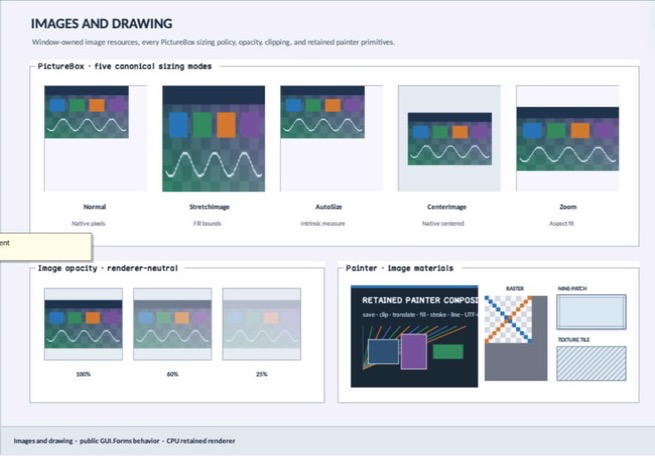

class · library
GraphicsRecorder
GraphicsRecorder is a bounded thread-affine command transaction with explicit save-token stack discipline, retained transform/clip/quality state, validated resource snapshots, deterministic trace output, and a terminal close phase.
Visual evidence

Ownership and hierarchy
- Hierarchy
- DrawingObject → GraphicsRecorder
- Declaration
- include/gui_forms/drawing/graphics_recorder/graphics_recorder.hpp:84
- Definition
- src/core/drawing/graphics_recorder/graphics_recorder.cpp
Declared methods
GraphicsRecorder public
GraphicsRecorder() = defaultConstructs an open recorder with identity transform and default quality state.
save public
[[nodiscard]] GraphicsStateToken save()Enforces stack capacity, allocates a nonzero token, retains current state, and records the save command.
restore public
void restore(GraphicsStateToken token)Requires LIFO exact-token ownership, restores state, and records the transition.
translate public
void translate(double x, double y)Validates and composes translation before recording it.
set_transform public
void set_transform(Matrix transform)Requires a finite matrix, commits it, and records the state change.
set_clip public
void set_clip(RectF clip)Validates and commits a finite clip rectangle.
reset_clip public
void reset_clip()Clears retained clipping and records the reset.
set_quality public
void set_quality(SmoothingMode smoothing, InterpolationMode interpolation, PixelOffsetMode pixel_offset, CompositingMode compositing, CompositingQuality compositing_quality)Validates every closed quality/compositing vocabulary and records their atomic state update.
current_state public
[[nodiscard]] GraphicsState current_state() constRequires an open live recorder and returns transform, clip, and quality state.
is_visible public
[[nodiscard]] bool is_visible(PointF point) constTests a point against current optional clip.
measure_string public
[[nodiscard]] SizeF measure_string(std::string_view utf8, const Font& font, const StringFormat& format, const TextMetricsProvider& provider) constValidates UTF-8/resource liveness and delegates immutable snapshots to the supplied metrics provider.
clear public
void clear(Color color)Records a surface clear color.
fill_rectangle public
void fill_rectangle(const Brush& brush, RectF rect)Validates bounds and snapshots a live brush into a fill command.
draw_rectangle public
void draw_rectangle(const Pen& pen, RectF rect)Validates bounds and snapshots a live pen into a stroke command.
draw_line public
void draw_line(const Pen& pen, PointF from, PointF to)Validates endpoints and snapshots a live pen.
draw_string public
void draw_string(std::string_view utf8, const Font& font, const SolidBrush& brush, PointF origin, const StringFormat& format)Validates bounded UTF-8 and origin, then owns text plus font/brush/format snapshots.
draw_ellipse public
void draw_ellipse(const Pen& pen, RectF bounds)Validates bounds and records a pen snapshot.
fill_ellipse public
void fill_ellipse(const Brush& brush, RectF bounds)Validates bounds and records a brush snapshot.
fill_polygon public
void fill_polygon(const Brush& brush, std::span<const PointF> points, FillMode fill_mode = FillMode::alternate)Validates bounded finite points/fill rule and owns points plus brush snapshot.
draw_path public
void draw_path(const Pen& pen, const GraphicsPath& path)Owns live pen and path snapshots.
fill_path public
void fill_path(const Brush& brush, const GraphicsPath& path)Owns live brush and path snapshots.
draw_image public
void draw_image(const ImageReference& image, RectF destination, RectF source, const ImageAttributes& attributes)Owns ImageReference or Bitmap snapshot, validated source/destination geometry, and ImageAttributes snapshot.
draw_image public
void draw_image(const Bitmap& image, RectF destination, RectF source, const ImageAttributes& attributes)Owns ImageReference or Bitmap snapshot, validated source/destination geometry, and ImageAttributes snapshot.
close public
void close()Requires balanced saved state and enters terminal closed state.
closed public
[[nodiscard]] bool closed() constReports terminal recorder state.
commands public
[[nodiscard]] std::span<const DrawingCommand> commands() constReturns the immutable recorded command span.
deterministic_trace public
[[nodiscard]] std::string deterministic_trace() constSerializes state and commands with stable numeric/resource vocabulary for equivalence tests.
on_dispose protected
void on_dispose() noexcept overrideClears commands/state stack and terminally closes without throwing.
require_recordable private
void require_recordable() constRequires live, owner-thread, nonclosed state.
append private
void append(DrawingCommand command)Enforces command capacity before committing one complete command.